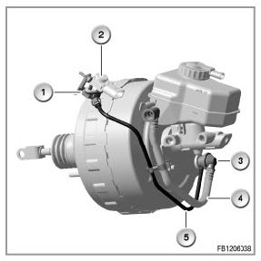
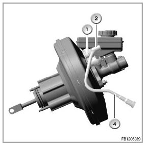
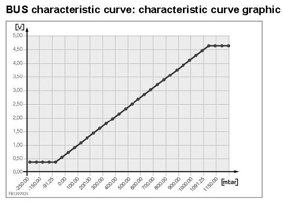

Initial Inspection and Diagnostic Overview
MSA Test Module For Brake Partial Vacuum Sensor (BUS)
Automatic engine start-stop, brake partial vacuum sensor:
In order to achieve adequate braking action at all times (also with the engine switched off), the partial vacuum in the brake system must be continuously monitored. This monitoring is ensured by the brake partial vacuum sensor that is always fitted in all MSA vehicles between the brake booster and non-return valve (the following graphic shows the complete brake booster. First graphic: brake booster in BMW 1 Series and 3 Series vehicles. Second graphic: brake booster in MINI vehicles).


The following part designations apply:
- 1: adapter / bracket
- 2: Brake partial vacuum sensor
- 3: Non-return valve
- 4: vacuum line
- 5: bypass line
An alternative designation for the brake partial vacuum sensor is: "partial vacuum sensor, brake booster". In BMW 1 Series and 3 Series vehicles, this sensor is connected via a separate cable. In MINI vehicles, the sensor is located directly at the non-return valve. The brake partial vacuum sensor (BUS) works on the basis of piezo-electrical signals and thus returns voltage signals that are converted in the engine management system into the corresponding partial vacuum in accordance with the target value table below. The voltage range of the displayed voltage signals lies between 350 mV and 4650 mV.
Automatic switch-on of the engine (switch-on requester: EV) is initiated for safety reasons when the brake partial vacuum falls short of the threshold of 500 hPa (mbar). Switching off the engine is inhibited as of a threshold of 550 hPa.
BUS characteristic curve: characteristic curve of the brake partial vacuum sensor
Partial vacuum in hPa (mbar) Output voltage signal in mV
- 350 350
- 300 350
- 250 350
- 200 350
- 150 350
- 100 350
- 50 500
± 0 681
+ 50 864
+ 100 1045
+ 150 1227
+ 200 1410
+ 250 1590
+ 300 1773
+ 350 1954
+ 400 2136
+ 450 2318
+ 500 2500
+ 550 2681
+ 600 2863
+ 650 3045
+ 700 3227
+ 750 3410
+ 800 3591
+ 850 3773
+ 900 3955
+ 950 4138
+ 1000 4318
+ 1050 4500
+ 1090 4650
+ 1100 4650
+ 1150 4650
+ 1200 4650
